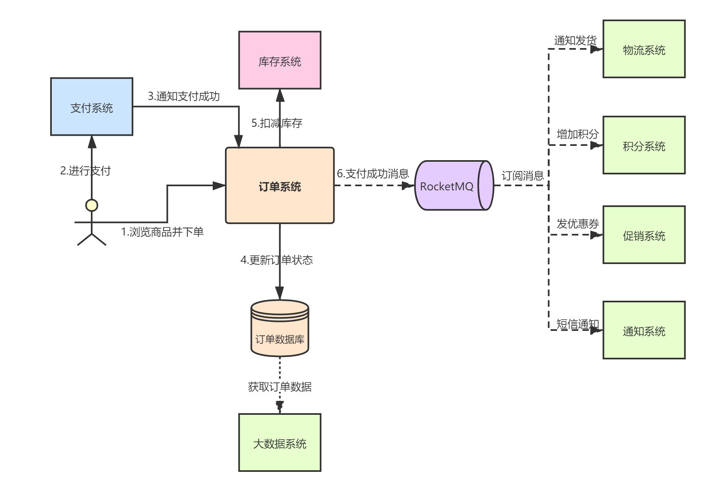

分布式消息中间件（五）——系统改造：异步、解耦、削峰
前几个章节，我们已经对RocketMQ的基本架构、生产部署进行了详细介绍。从本章开始，我们就要利用RocketMQ对第一章中介绍的订单系统进行改造了。
回顾下第一章的系统背景，我们的订单系统的逻辑架构图下：

上述架构存在如下问题：
- 同步调用问题：用户支付完一笔订单，订单系统就要同步执行一系列接口调用，导致响应慢，用户体验差；
- 性能问题：瓶颈在数据库，无法应对“促销”之类的活动带来的峰值流量；
- 耦合问题：积分、促销、通知、物流应当与核心链路解耦；
- 大数据传输问题：外部系统会从订单数据库里查询订单数据，消耗系统本身的资源；
- 状态补偿问题：”中间状态“的订单通过批量扫描的方式进行状态补偿，效率非常低。
本章，我们来解决同步调用问题、耦合问题、性能问题。
一、异步
首先，我们分析下整个业务的核心链路。用户支付完成后，最关键的是什么？是更新订单状态以及扣减库存，一旦用户支付成功，只要保证订单状态变为“支付成功”，库存扣减成功，这样核心数据就不会错乱。而诸如物流发货、短信通知、增加积分、促销优惠券之类的操作完全可以异步化：

上图中，我们引入RocketMQ后，当订单系统更新完订单状态和扣减成功库存后，就发送一条“支付成功”消息到MQ中，然后立即返回。而物流、短信、积分、促销系统会订阅MQ中的该类消息，它们收到通知后就会去异步处理。
通过引入MQ，整个系统的响应时间可以大大缩短。比如，订单系统本身操作需要耗费30ms，调用库存系统接口进行库存扣减耗费80ms，增加积分耗费50ms，派发优惠券耗费60ms，发送短信耗费100ms，通知发货耗费500ms。
如果没有引入MQ进行架构改造，每次支付成功后的大量同步接口调用，耗时可能接近1秒钟，而改造后，只需要100ms就可以完成响应。
RocketMQ中的Producer支持三种发送消息的模式：同步、异步回调、单向异步；Consumer支持两种消费消息的模式：Push模式、Pull模式。具体采用哪种模式，需要结合具体的业务场景去分析，我会在后面的章节对生产者和消费者的原理进行介绍。
二、解耦
解耦和异步是同生同源的，我们经过上述的异步化改造后，自然而然的就已经将物流、短信、积分、促销系统解耦出去了。
三、削峰
针对“促销”场景下的高并发访问问题，瓶颈主要在数据库。所以，我们必须限制直接打到数据库上的流量。我们假设“促销”是针对某些商品的秒杀活动，那么可以从以下几个维度进行改造：
- 前端页面：设置校验（验证码、答题），阻止作弊器刷单；
- 独立出“秒杀系统”，专门负责处理“秒杀”活动的请求，避免对正常的订单系统造成影响；
- 库存预先写入Redis，基于Redis做高并发下的库存扣减，一旦库存不足，拒绝掉后续所有秒杀请求；
- 扣减库存成功的秒杀请求，先进入MQ，然后由订单系统订阅消息并下单。
3.1 前端控制
前端控制其实很好理解，肯定会有人在秒杀活动开始前不断的刷商品详情页，那么在秒杀活动开始的那一瞬间，就会同时涌入大量请求。如果采用验证码或答题方式，就可以将请求错峰，因为不同人的答题速度肯定不一样，这样就从源头减少了并发请求数。
此外，肯定还会有人写作弊脚本进行秒杀，答题的方式可以有效屏蔽这种作弊请求。
3.2 独立服务
一般针对“秒杀”这种促销活动，需要独立出一套单独的服务进行部署，避免对正常的订单服务造成影响。如上图中，我们对订单系统部署了两个集群，一个集群是秒杀系统集群，一个集群是普通订单系统集群。即使秒杀系统因业务量太大挂了，也不会普通下单请求出现问题。
3.3 库存预热
由于秒杀商品的数量是有限制的，且在业务上一般会提前预告，所以我们可以将秒杀商品的库存提前写到Redis中。因为如果直接让秒杀系统调用库存系统的接口，进行下单，会对库存系统造成非常大的压力，而Redis的性能是非常好，可以轻松扛个上万并发请求。
此外，当Redis中的库存不足后，可以直接拒绝请求，大幅削减后续无效请求对秒杀系统造成的压力。
3.4 MQ排队
接下来我们考虑下，假设1秒钟内秒杀成功了1万件商品，即Redis中库存都扣减成功了，那么如果秒杀系统此时直接去访问数据库创建订单，数据库可能会直接宕掉。
所以秒杀系统此时可以发送一个“秒杀成功”的消息到MQ中，由普通订单系统从MQ中消费秒杀成功的消息，进行常规性的操作即可。因为瞬间上万并发的压力对RocketMQ来说可以轻松扛下，普通订单系统可以根据自己的工作负载，慢慢从MQ中消费消息，然后操作数据库，这样就不会对数据造成很大的压力。
目前业界对“秒杀”这种业务场景其实已经有非常成熟的一套解决方案，也并不是什么非常高深的知识或技术难点，本章只是引入它来作为MQ削峰功能的一个讲解示例，读者有兴趣可以自行参考相关资料。
四、总结
本章，我们针对案例系统中存在的部分问题进行了分析，并通过RocketMQ对其进行了改造。消息中间件的核心功能就是异步、解耦、削峰。后续章节，我们会继续解决案例中剩余的几个问题。另外，引入MQ后其实也会带来整个系统的复杂度上升，比如消息丢失问题、消息有序问题、数据一致性问题等等，我会在后续章节一一讲解。